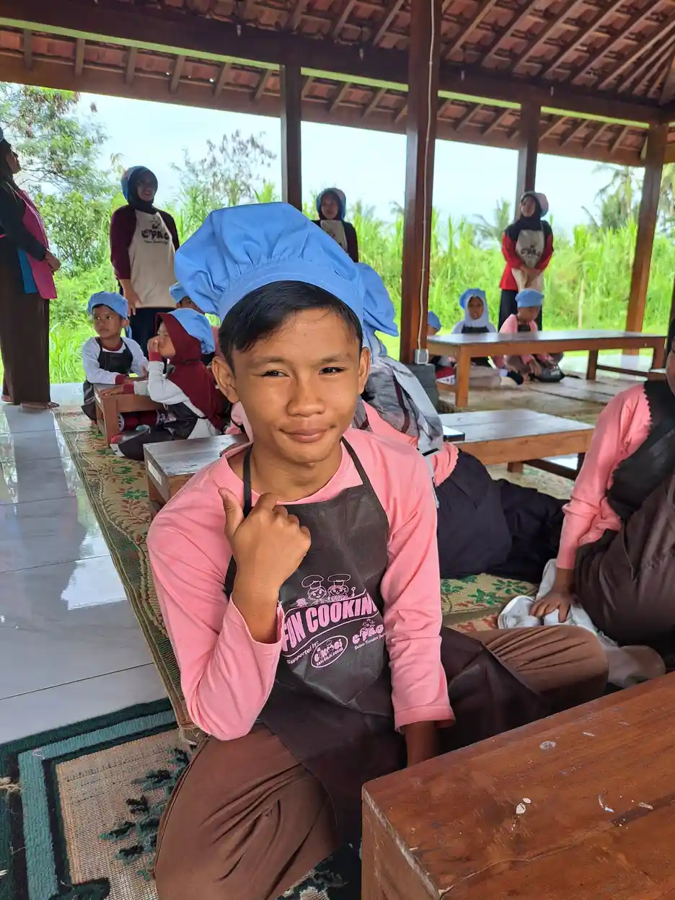

Jawaban singkatnya: GDD tidak sama dengan autis. GDD (global developmental delay, atau keterlambatan perkembangan umum) adalah keadaan ketika anak tertinggal secara bermakna di dua ranah perkembangan atau lebih, menurut Ikatan Dokter Anak Indonesia (IDAI). Autisme adalah kondisi perkembangan saraf dengan dua ciri inti: hambatan komunikasi dan interaksi sosial yang menetap, serta pola perilaku, minat, atau aktivitas yang terbatas dan berulang, sesuai kriteria DSM-5 yang dimuat CDC. Keduanya bisa dialami satu anak sekaligus, dan yang bisa memastikannya hanya evaluasi oleh dokter anak, psikolog, atau psikiater anak.
Pertanyaan ini sering muncul setelah orang tua membaca istilah GDD di surat rujukan atau hasil pemeriksaan, lalu khawatir itu cara halus menyebut autisme. Artikel ini menjelaskan arti masing-masing istilah, di mana letak perbedaannya, kenapa keduanya sering tertukar, dan langkah pemeriksaan yang tersedia di Indonesia. Kalau Ayah dan Bunda ingin memahami autisme dari dasarnya lebih dulu, bacalah pengertian autisme, ciri, dan penanganannya.
Penting sebelum membaca
Artikel ini untuk edukasi, bukan alat diagnosis. Daftar tanda di bawah tidak bisa dipakai untuk menyimpulkan kondisi anak sendiri di rumah. Bila ada kekhawatiran soal perkembangan si kecil, bawa ke dokter spesialis anak (Sp.A) atau psikolog klinis anak untuk evaluasi.
Daftar Isi
- Apa itu GDD (keterlambatan perkembangan umum)
- Apa itu autisme menurut kriteria diagnosis
- Tabel perbedaan GDD dan autisme
- Kenapa GDD dan autisme sering tertukar
- Bisakah anak mengalami keduanya?
- Tanda yang perlu dicermati orang tua
- Skrining dan evaluasi: langkahnya di Indonesia
- Yang bisa dilakukan sambil menunggu hasil
- Pertanyaan yang sering diajukan
Apa Itu GDD (Keterlambatan Perkembangan Umum)?
IDAI membagi perkembangan anak ke dalam empat ranah besar: motorik kasar, motorik halus, bahasa atau bicara, dan personal sosial atau kemandirian. Seorang anak bisa terlambat di satu ranah saja, misalnya hanya bicaranya yang tertinggal. Istilah GDD baru dipakai bila keterlambatan yang bermakna terjadi di dua ranah atau lebih. Laporan klinis American Academy of Pediatrics (AAP) tahun 2014 memakai definisi serupa dan menambahkan ranah kognitif serta aktivitas sehari-hari.
Beberapa hal penting tentang GDD:
- Istilah untuk anak kecil. Menurut IDAI dan AAP, GDD dipakai untuk anak di bawah 5 tahun. Pada anak yang lebih besar, ketika tes kecerdasan sudah bisa memberi hasil yang andal, dokter memakai istilah lain seperti disabilitas intelektual. Penjelasannya ada di artikel disabilitas intelektual adalah.
- Bukan vonis permanen. IDAI menegaskan anak dengan keterlambatan perkembangan umum tidak selalu mengalami disabilitas intelektual di kemudian hari. AAP juga mencatat keterlambatan yang ringan bisa bersifat sementara.
- Cukup sering ditemui. IDAI memperkirakan sekitar 5 sampai 10% anak mengalami keterlambatan perkembangan, dan sekitar 1 sampai 3% anak di bawah 5 tahun mengalami keterlambatan perkembangan umum.
- Penyebabnya beragam. IDAI menyebut antara lain kelainan genetik atau kromosom seperti sindrom Down, gangguan atau infeksi susunan saraf seperti cerebral palsy dan sindrom Rubella, serta riwayat bayi risiko tinggi seperti lahir prematur atau berat lahir rendah.
Dengan kata lain, GDD adalah deskripsi pola keterlambatan, bukan nama penyakit yang menjelaskan penyebabnya. Itulah sebabnya dokter biasanya melanjutkan dengan mencari penyebab di balik keterlambatan tersebut.
Apa Itu Autisme Menurut Kriteria Diagnosis?
Autisme (gangguan spektrum autisme, autism spectrum disorder) didiagnosis berdasarkan kriteria DSM-5 dari American Psychiatric Association. Halaman Clinical Testing and Diagnosis for Autism dari CDC memuat kriterianya secara lengkap. Intinya, seorang anak perlu menunjukkan:
- Hambatan menetap dalam komunikasi dan interaksi sosial di berbagai situasi, pada ketiga area berikut: timbal balik sosial dan emosional, komunikasi nonverbal (kontak mata, bahasa tubuh, gestur, ekspresi wajah), serta kemampuan membangun dan memahami hubungan.
- Pola perilaku, minat, atau aktivitas yang terbatas dan berulang, minimal dua dari empat bentuk: gerakan atau ucapan berulang (misalnya menjajarkan mainan atau ekolalia), kekakuan pada rutinitas, minat yang sangat sempit dan intens, serta respons sensorik yang berlebihan atau kurang.
Gejalanya muncul sejak periode perkembangan awal dan menimbulkan hambatan nyata dalam keseharian. Data jejaring pemantauan ADDM milik CDC memperkirakan sekitar 1 dari 31 anak usia 8 tahun di Amerika Serikat teridentifikasi autis. Untuk penyebab yang sejauh ini diketahui, lihat artikel apa penyebab autis pada anak.
Tabel Perbedaan GDD dan Autisme
| Aspek | GDD | Autisme |
|---|---|---|
| Yang digambarkan | Keterlambatan bermakna di dua ranah perkembangan atau lebih | Pola khas hambatan komunikasi sosial plus perilaku atau minat yang terbatas dan berulang |
| Ciri pembeda | Anak tertinggal di banyak bidang, tetapi keterampilan sosialnya kurang lebih sejalan dengan tingkat perkembangannya secara umum | Kemampuan sosial dan komunikasinya lebih rendah daripada yang diharapkan dari tingkat perkembangannya secara umum, disertai perilaku berulang |
| Rentang usia istilah | Di bawah 5 tahun, lalu dievaluasi ulang | Bisa didiagnosis sejak usia 18 bulan (AAP) dan tidak dibatasi usia |
| Perilaku berulang | Tidak menjadi syarat | Syarat diagnosis (minimal dua bentuk) |
| Arah pemeriksaan lanjutan | Mencari penyebab (misalnya pemeriksaan genetik), memantau apakah anak mengejar ketertinggalan | Menilai kebutuhan dukungan, kondisi penyerta, dan intervensi perilaku serta komunikasi |
| Bisa bersamaan? | Ya. Kriteria DSM-5 mengizinkan diagnosis ganda bila syaratnya terpenuhi (lihat bagian di bawah) | |
Tabel disusun tim YUKA dari kriteria DSM-5 di situs CDC, laporan klinis AAP 2014 dan 2020, serta artikel IDAI yang ditautkan di halaman ini, per September 2026.
Kenapa GDD dan Autisme Sering Tertukar?
Ada beberapa alasan yang membuat keduanya mudah dikira sama, bahkan oleh orang tua yang sudah banyak membaca:
- Keterlambatan bicara muncul di keduanya. Anak dengan GDD hampir selalu terlambat bicara karena bahasa adalah salah satu ranahnya. Anak autis juga sering terlambat bicara. Halaman tanda dan gejala autisme dari CDC mencantumkan keterlambatan bahasa, gerak, dan kemampuan kognitif sebagai ciri yang kerap menyertai autisme. Beda keterlambatan bicara biasa dan kondisi lain dibahas di artikel speech delay adalah.
- Dokter memang mempertimbangkan keduanya bersamaan. Pedoman NICE CG128 dari Inggris (rekomendasi 1.5.7) memasukkan disabilitas intelektual dan GDD ke dalam daftar diagnosis banding yang perlu dipertimbangkan saat menilai autisme.
- Sebagian anak memang menunjukkan ciri keduanya. Laporan klinis AAP 2014 tentang evaluasi GDD menyebut ada anak yang datang dengan GDD sekaligus gambaran klinis autisme.
- Pada anak sangat muda, gambarannya belum jelas. NICE CG128 (rekomendasi 1.5.12) mengingatkan diagnosis autisme bisa belum pasti pada anak di bawah 24 bulan dan pada anak yang usia perkembangannya di bawah 18 bulan, kelompok yang justru banyak berisi anak dengan GDD. Karena itu kesimpulan awal bisa berubah setelah anak diamati lebih lama.
Kunci pembedanya menurut CDC ada pada perilaku dan minat yang terbatas serta berulang. Ciri itulah yang membedakan autisme dari kondisi yang masalahnya hanya pada komunikasi dan interaksi sosial.

Bisakah Anak Mengalami GDD dan Autisme Sekaligus?
Bisa. Kriteria DSM-5 butir E yang dimuat CDC berbunyi bahwa gejala autisme harus tidak lebih tepat dijelaskan oleh disabilitas intelektual atau GDD. Kalimat berikutnya menyebut disabilitas intelektual dan autisme sering muncul bersamaan, dan untuk menegakkan keduanya sekaligus, kemampuan komunikasi sosial anak harus berada di bawah yang diharapkan untuk tingkat perkembangannya secara umum.
Dalam praktik, artinya tim pemeriksa tidak hanya membandingkan anak dengan teman seusianya. Mereka membandingkan kemampuan sosial anak dengan kemampuan dia sendiri di bidang lain. Contoh sederhananya begini. Seorang anak 3 tahun yang secara keseluruhan berkembang seperti anak 18 bulan wajar bila bicaranya juga seperti anak 18 bulan. Kalau kontak mata, menunjuk untuk berbagi perhatian, dan respons saat dipanggil jauh di bawah tingkat 18 bulan itu, dan ada perilaku berulang, dokter akan menimbang kemungkinan autisme di samping GDD. Penilaian seperti ini butuh pengalaman klinis dan tidak bisa dilakukan lewat kuis daring.
Tanda yang Perlu Dicermati Orang Tua
Daftar berikut bukan alat diagnosis. Fungsinya membantu orang tua tahu kapan saatnya bertanya ke tenaga kesehatan. Menurut IDAI, bila menemukan salah satu tanda bahaya perkembangan, jangan menunda pemeriksaan.
Tanda keterlambatan di beberapa ranah (sering dikaitkan dengan GDD)
- Motorik kasar: gerakan tubuh kiri dan kanan tidak seimbang, otot terlalu lemas atau terlalu kaku, atau refleks bayi yang masih bertahan setelah usia 6 bulan.
- Motorik halus: tangan masih terus menggenggam setelah usia 4 bulan, atau kebiasaan memasukkan mainan ke mulut masih sangat dominan setelah 14 bulan.
- Bahasa: belum ada kata bermakna di usia 24 bulan, atau belum bisa merangkai tiga kata di usia 36 bulan.
- Keterlambatan terlihat di lebih dari satu bidang sekaligus, misalnya belum berjalan dan belum bicara pada usia yang diharapkan. Panduan tahapan usia bisa dilihat di daftar milestone perkembangan CDC atau buku KIA.
Tanda yang lebih mengarah ke autisme
- Tidak merespons saat namanya dipanggil pada usia 12 bulan, dan kurang mampu berbagi perhatian dengan orang lain (misalnya menunjuk untuk memperlihatkan sesuatu) sekitar usia 20 bulan, sesuai tanda bahaya dari IDAI.
- Menghindari atau jarang melakukan kontak mata, dan belum ikut permainan interaktif sederhana seperti tepuk-tepuk tangan bersama (pat-a-cake) pada usia 12 bulan (contoh dari CDC).
- Menjajarkan mainan dan marah bila urutannya diubah, mengulang kata atau kalimat, sangat terganggu oleh perubahan kecil, atau menggerakkan tangan dan tubuh secara berulang.
- Reaksi yang tidak biasa terhadap suara, bau, rasa, tekstur, atau cahaya.
Tanda yang perlu diperiksakan segera
Anak kehilangan kemampuan bicara atau sosial yang sebelumnya sudah ia kuasai. NICE CG128 meminta anak di bawah 3 tahun dengan kemunduran bahasa atau sosial langsung dirujuk ke tim autisme, dan anak yang lebih besar dirujuk dulu ke dokter anak atau dokter saraf anak. Kemunduran seperti ini tidak perlu ditunggu.
Skrining dan Evaluasi: Langkahnya di Indonesia
Memeriksakan anak biasanya berjalan dalam dua tahap: skrining untuk menyaring siapa yang perlu diperiksa lebih lanjut, lalu evaluasi diagnostik oleh tenaga ahli.
1. Skrining
AAP (Lipkin dan Macias, 2020) merekomendasikan pemantauan perkembangan di setiap kunjungan kesehatan dan skrining perkembangan terstandar pada usia 9, 18, dan 30 bulan. Untuk autisme, laporan klinis AAP 2020 (Hyman dan rekan) tetap merekomendasikan skrining terstandar pada usia 18 dan 24 bulan, karena autisme bisa didiagnosis sejak usia 18 bulan dan intervensinya berbasis bukti.
Di Indonesia, pemantauan ini masuk program Stimulasi, Deteksi, dan Intervensi Dini Tumbuh Kembang (SDIDTK). Dokumentasi SATUSEHAT Kementerian Kesehatan mencatat instrumen SDIDTK antara lain Kuesioner Pra Skrining Perkembangan (KPSP), Tes Daya Dengar, Tes Daya Lihat, Kuesioner Masalah Perilaku dan Emosional, M-CHAT versi revisi untuk autisme, serta kuesioner GPPH. KPSP membantu menangkap keterlambatan di berbagai ranah, sedangkan M-CHAT-R/F adalah alat skrining dua tahap berbasis laporan orang tua untuk menilai kemungkinan autisme. Skrining ini bisa ditanyakan di posyandu, puskesmas, atau dokter anak.
Hasil skrining yang meragukan atau positif bukan diagnosis. Artinya anak perlu diperiksa lebih lanjut.
2. Evaluasi diagnostik
Evaluasi biasanya dilakukan dokter spesialis anak (idealnya subspesialis tumbuh kembang), psikolog klinis anak, atau psikiater anak, sering bersama terapis. Menurut NICE CG128, penilaian autisme mencakup kekhawatiran orang tua, riwayat perkembangan yang rinci, pengamatan langsung kemampuan sosial dan komunikasi anak, pemeriksaan fisik, pertimbangan diagnosis banding, dan pemeriksaan kondisi yang mungkin menyertai. NICE juga meminta diagnosis tidak ditegakkan hanya dari satu alat tes khusus autisme (rekomendasi 1.5.11).
Bila anak mengalami GDD, laporan klinis AAP 2014 menganjurkan pencarian penyebab secara terarah. Pemeriksaan chromosomal microarray ditetapkan sebagai tes genetik lini pertama, dan tes sindrom fragile X tetap menjadi tes lini pertama yang penting. Dokter yang akan menilai pemeriksaan mana yang relevan untuk tiap anak. Gambaran umum proses penilaian kebutuhan anak juga kami tulis di artikel asesmen ABK.
Yang Bisa Dilakukan Sambil Menunggu Hasil
Proses dari skrining sampai diagnosis bisa makan waktu, apalagi bila antrean ke dokter tumbuh kembang panjang. Kabar baiknya, dukungan untuk anak tidak harus menunggu label akhir. AAP menyebut kekhawatiran perkembangan bisa langsung diikuti rujukan ke layanan intervensi. Beberapa hal yang bisa Ayah dan Bunda lakukan:
- Catat dan rekam. Tulis kapan anak mencapai tiap kemampuan, dan rekam video singkat perilaku yang dikhawatirkan. Rekaman membantu dokter melihat hal yang mungkin tidak muncul saat pemeriksaan.
- Tanyakan terapi yang bisa dimulai. Tergantung kebutuhannya, anak mungkin disarankan terapi wicara, terapi okupasi, atau fisioterapi. Prinsip dan manfaat intervensi dini kami bahas di artikel terpisah.
- Stimulasi lewat kegiatan harian. Ajak anak bicara saat makan, mandi, dan bermain, beri kesempatan menunjuk dan memilih, dan batasi layar. Hal sederhana ini mendukung perkembangan apa pun hasil pemeriksaannya.
- Jaga diri sendiri. Masa menunggu sering melelahkan secara emosi. Tulisan kami tentang menerima diagnosis anak berkebutuhan khusus bisa menemani prosesnya.
Pendampingan di YUKA
Di Sekolah Inklusi Taruna Imani, YUKA mendampingi anak dengan beragam kebutuhan belajar melalui rutinitas yang terstruktur, kegiatan praktik seperti memasak dan wisata edukasi, serta komunikasi rutin dengan orang tua. YUKA bukan fasilitas medis dan tidak menegakkan diagnosis GDD maupun autisme; untuk itu kami mengarahkan keluarga ke dokter anak, psikolog, atau psikiater anak. Ingin berdiskusi soal pendampingan belajar anak? Hubungi tim YUKA.
Pertanyaan yang Sering Diajukan
Apakah GDD sama dengan autis?
Tidak. GDD (global developmental delay atau keterlambatan perkembangan umum) berarti anak tertinggal secara bermakna di dua ranah perkembangan atau lebih, misalnya motorik dan bahasa. Autisme adalah kondisi perkembangan saraf yang ditandai hambatan komunikasi dan interaksi sosial yang menetap, ditambah pola perilaku atau minat yang terbatas dan berulang. Keduanya berbeda, tetapi bisa dialami anak yang sama.
Apakah anak GDD pasti autis?
Tidak. Banyak anak dengan GDD tidak memenuhi kriteria autisme. Kriteria DSM-5 yang dimuat CDC justru mensyaratkan bahwa gejala autisme tidak lebih tepat dijelaskan oleh GDD atau disabilitas intelektual. Sebaliknya, sebagian anak autis juga mengalami keterlambatan di banyak ranah, jadi hanya evaluasi oleh dokter anak atau psikolog yang bisa memastikannya.
Apakah GDD bisa hilang atau mengejar ketertinggalan?
Bisa berbeda-beda. Menurut IDAI, anak dengan keterlambatan perkembangan umum tidak selalu mengalami disabilitas intelektual di kemudian hari, dan laporan klinis American Academy of Pediatrics menyebut keterlambatan yang ringan bisa bersifat sementara. Karena itu GDD dievaluasi ulang seiring anak bertambah usia, sambil stimulasi dan terapi tetap berjalan.
Di usia berapa anak bisa diskrining autisme?
American Academy of Pediatrics merekomendasikan skrining autisme terstandar pada usia 18 dan 24 bulan, di samping skrining perkembangan umum pada usia 9, 18, dan 30 bulan. Di Indonesia, kuesioner M-CHAT versi revisi termasuk instrumen dalam program SDIDTK Kemenkes. Hasil skrining positif artinya perlu evaluasi lanjutan, bukan diagnosis.
Ke mana memeriksakan anak yang dicurigai GDD atau autis?
Mulailah dari posyandu, puskesmas, atau dokter anak untuk skrining perkembangan. Bila hasilnya meragukan atau ada tanda bahaya, anak biasanya dirujuk ke dokter spesialis anak (idealnya konsultan tumbuh kembang), psikolog klinis anak, atau psikiater anak untuk evaluasi menyeluruh. Kehilangan kemampuan bicara atau sosial yang sebelumnya sudah dikuasai adalah alasan untuk segera diperiksa.
Artikel Terkait
Sumber dan Referensi
- IDAI: Mengenal Keterlambatan Perkembangan Umum pada Anak (Bernie Endyarni Medise)
- CDC: Clinical Testing and Diagnosis for Autism (kriteria DSM-5)
- CDC: Signs and Symptoms of Autism Spectrum Disorder
- CDC: Data and Statistics on Autism Spectrum Disorder
- Moeschler JB, Shevell M. Comprehensive Evaluation of the Child With Intellectual Disability or Global Developmental Delays. Pediatrics (AAP), 2014
- Hyman SL, Levy SE, Myers SM. Identification, Evaluation, and Management of Children With Autism Spectrum Disorder. Pediatrics (AAP), 2020
- Lipkin PH, Macias MM. Promoting Optimal Development: Developmental Surveillance and Screening. Pediatrics (AAP), 2020
- NICE CG128: Autism spectrum disorder in under 19s, recognition, referral and diagnosis
- Kementerian Kesehatan RI, SATUSEHAT: Tumbuh Kembang (instrumen SDIDTK)
- M-CHAT-R/F (Robins, Fein, dan Barton), situs resmi
- CDC: Developmental Milestones (Learn the Signs. Act Early.)
Disclaimer medis: Artikel ini bersifat edukasi umum dan bukan pengganti evaluasi oleh dokter spesialis anak, psikolog klinis, atau psikiater anak. Diagnosis GDD maupun autisme hanya dapat ditegakkan oleh tenaga kesehatan melalui pemeriksaan langsung.